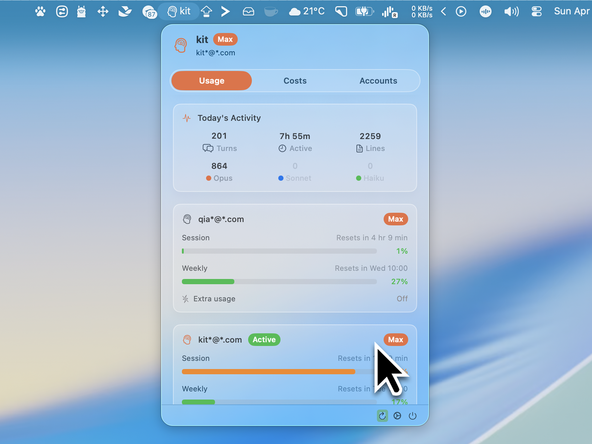

Dual-provider dashboard
View Claude Code and Codex together, or filter down to one provider.
CCSwitcher Codex tracks active accounts, quota windows, local activity, and API-equivalent cost estimates for Claude Code and OpenAI Codex in one native macOS utility.

View Claude Code and Codex together, or filter down to one provider.
Reads Codex CLI auth state and checks active quota windows.
Parses local logs for API-equivalent token and model cost estimates.
Includes desktop widgets for usage, cost, and activity at a glance.
This project builds on the original CCSwitcher Claude Code workflows and keeps Codex monitoring separate as an independent fork.